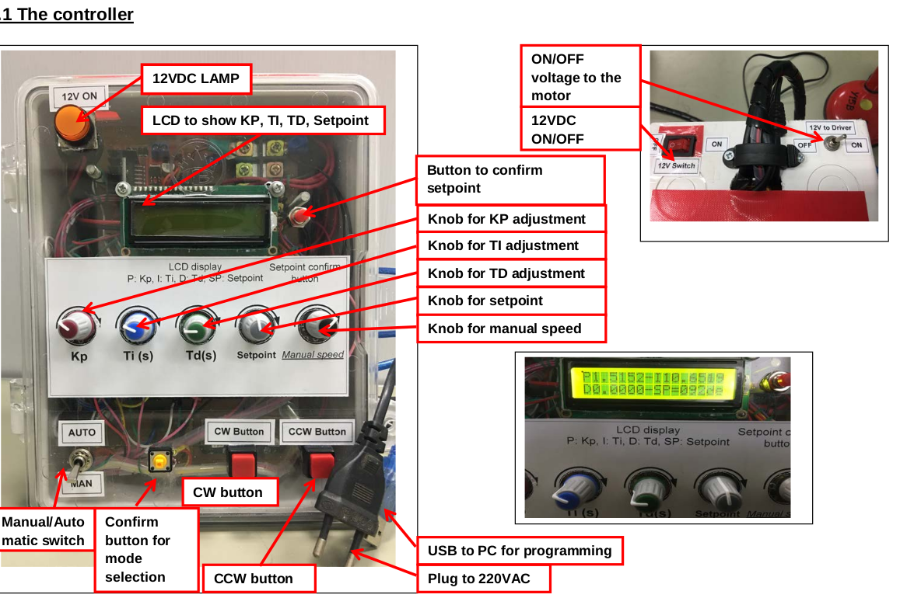

Overview
The **Angular Position Control System** is designed to control the **rotation of a DC motor** using a **PID controller**. The system supports both **manual and automatic modes**, allowing real-time tuning of **Kp, Ki, and Kd** parameters.
📌 System Components
- DC Motor with **Rotary Encoder**
- Arduino Mega 2560 for real-time processing
- LCD Display to monitor system parameters
- PID tuning via physical **knobs**
- Limit switches for **homing mechanism**
⚙️ System Operation
The system operates in **two modes**:
- Manual Mode: User controls rotation speed and direction using buttons.
- Automatic Mode: The system moves to a **setpoint** using PID control.
📌 Circuit Diagram
📌 System Overview

📌 PID Algorithm
double Kp = 1.0;
double Ki = 0.5;
double Kd = 0.2;
double setPoint = 90; // Target angle
double processVariable = 0;
double controlOutput = 0;
void loop() {
double error = setPoint - processVariable;
double integral = integral + error;
double derivative = error - previous_error;
controlOutput = Kp * error + Ki * integral + Kd * derivative;
previous_error = error;
}
🔗 Download Resources
🔗 Related Project
Explore the **Linear Position Control System**.
Go to Linear Control